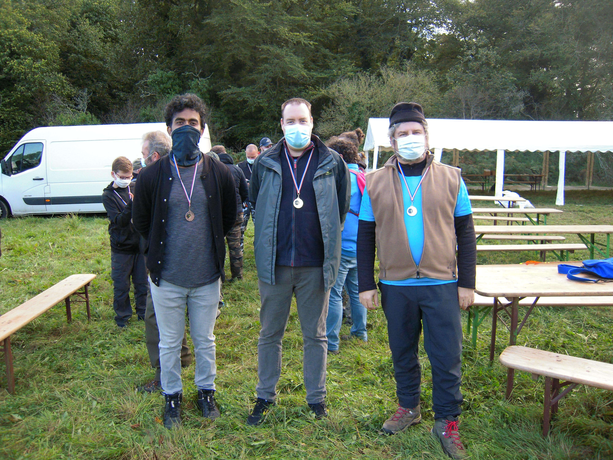
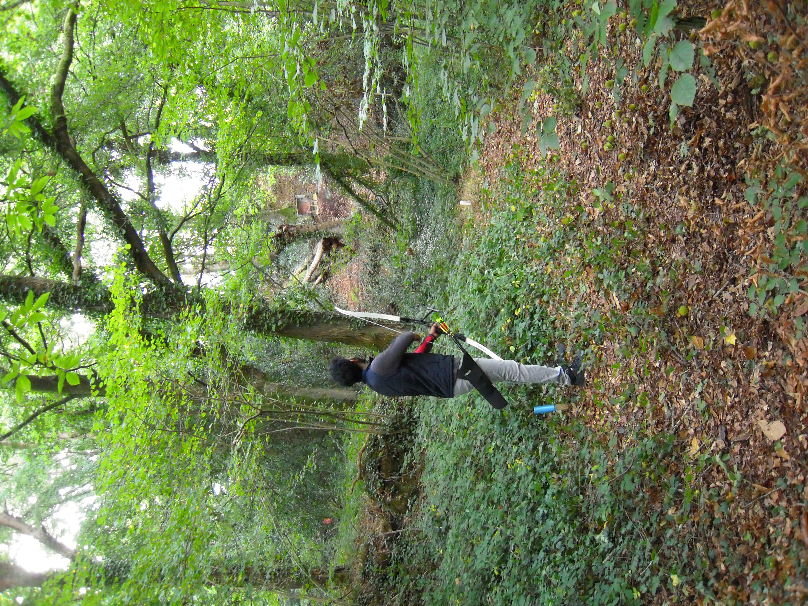
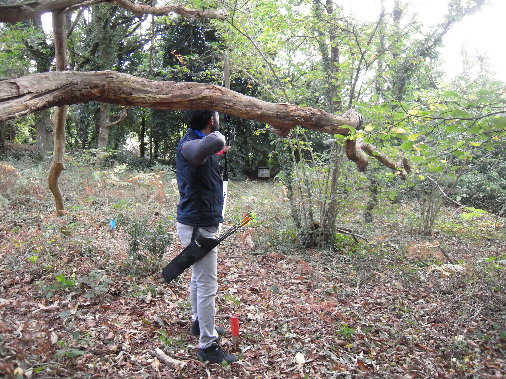

I'm a Researcher (Atleast I try to be...)
- Name: Amit K. Shukla
- Affiliation: University of Jyvaskyla
- Residence: Jyvaskyla, Finland
- Hometown: Kapurthala, Punjab, India
I am currently a Post-Doctoral
Researcher & Lecturer at Faculty of Information Technology, University of Jyvaskyla, Finland. I received
my Ph.D. in Computer Science from South Asian
University, New Delhi, India. I am a gold medalist
in the master’s degree (2013) in Computer Science from
South Asian University. I have chaired the ACM
chapter of South Asian University from 2011/12 and currently a IEEE Young Professional and an active member
of societies such as: IEEE Computational Intelligence
Society and EUSFLAT.
I recently joined the editorial board of Axioms journal of MDPI in July, 2021. I am a regular reviewer of Journals such as: Engineering Applications of Artificial Intelligence, Applied Soft Computing, IEEE Transactions on Fuzzy Systems, Neural Computing and ApplicationsJournal of Advanced Research etc.
My research areas include: Fuzzy Sets and Systems, eXplanable Artificial Intelligence, anomaly detection, real-time systems, deep learning, and soft-computing techniques.
My Education
Ph.D.
Thesis Topic: Type-2 Fuzzy Uncertainty Modelling in Deep Belief Networks and
Industry 4.0 Systems
Masters in Computer Science
Thesis Topic: Type-2 Fuzzy Uncertainty modelling in a Real-Time Systems
BSc. (Honors) Computer Science
University of Delhi
Published inJournals
IEEE Transactions on Fuzzy Systems
Engineering Applications of Artificial Intelligence
Applied Soft Computing
Artificial Intelligence Review
Computers in Industry
Neural Computing and Applications
Journal of Network and Computer Applications
IEEE Computational Intelligence Magazine
Journal of Intelligent & Fuzzy Systems
Google Scholar Statistics
My Education
-
South Asian University
Ph.D. Computer Science 2014-2018Thesis Title: Type-2 Fuzzy Uncertainty Modelling in Deep Belief Networks and Industry 4.0 Systems
-
South Asian University
Masters Degree (Computer Science) 2011-2013Thesis Topic: Type-2 Fuzzy Uncertainty modelling in a Real-Time Systems
-
University of Delhi
BSc (Honors) Computer Scinece 2007-2010
My Experience
-
ENSSAT, SHAMAN Lab, IRISA, University of Rennes 1, France
Postdoctoral Researcher March'2019-December'2020Suspicious Item detection in the Shipment Industry...
-
HCL Technologies
Senior Software Test Engineer 2013-2014-----
-
Aricent Technologies
Test Engineere 2010-2011Nokia PCU Testing, GSM R
My Teachings
-
University of Jyvaskyla
Simulation 2021Course Structure and details to be uploaded soon...
-
South Asian University
Fuzzy Modelling 2017 -
University of Delhi
Real-Time Operating System
My Teachings
-
Growth and Applicability of Type-2 Fuzzy Sets and Systems
WCCI 2022Fuzzy Sets and Systems is an area of computational intelligence, pioneered by Lotfi Zadeh over 50 years ago in a seminal paper in Information and Control. Fuzzy Sets (FSs) deal with uncertainty in our knowledge of a particular situation. Research and applications in FSs have grown steadily over 50 years. More recently, we have seen a growth in Type-2 Fuzzy Set (T2 FS) related papers, where T2 FSs are utilized to handle uncertainty in real-world problems. It has evolved from an emerging field to full-fledged research area where researchers have proved its significance in various applications such as: time series, real-time systems, aeronautics, gene expression analysis, etc. Mostly, type-2 fuzzy sets (T2 FSs) or interval T2 FSs (IT2 FSs) has been used in these applications only because they potentially hold more implication than the traditional FSs (or type-1 FSs). The membership function modelling in these T2 FSs and IT2 FSs offers more freedom than the type-1 FSs. Technically, the membership function uncertainty is uniformly weighted in the IT2 FSs, while it is non-uniform in T2 FSs. According to the widely used indexing platform, Scopus, there are already more than 4,500 publications on T2 FSs till the mid of 2019 and the number of publications is increasing rapidly every month. One of the pioneer in this field, Prof. Jerry. M. Mendel, recently established that a general T2 fuzzy logic systems (GT2 FLS) has the capability to give better (or at least equal) performance than a IT2 FLS which on the other hand have the potential to produce better (or at least equal) performance than a T1 FLS. This has led a number of researchers (but very few) to focus on this GT2 FSs. The modelling and representation have now been well established in the literature for the researchers to be explored for various applications. This warrants more and more research attention from the scientific community on this important topic, especially since everyday newer and newer systems are emerging across all the domains of science and engineering, e.g. social networks, big data analytics, cyber security, cyber-physical systems, cloud computing etc. Moreover, uncertainty modelling using T2 FSs has a lot of potential within the framework of machine learning and deep learning.
-
Computational Intelligence approaches for Industry 4.0
WCCI 2022The fourth industrial revolution (Industry 4.0) has brought the overall transformation using digital integration and intelligent engineering. It is quoted as the next level of manufacturing where machines will redefine themselves in how they communicate and perform individual functions. The notion of Industry 4.0 was coined by Kagermann et al. in 2011, which fuses the virtual and the real world with emphasis on engineering applications such as robotics, digitization, and automation. For any system to be regarded as Industry 4.0, constant connectivity, human assistance and decentralized decision making are absolute necessities. The essential components of Industry 4.0 comprised of cyber–physical systems (CPSs), additive manufacturing, virtual and augmented reality, cloud computing, big data analytics, data science etc. to name a few. While going through these application domains and key areas, it is found that energy efficiency, scheduling, big-data, real-time computing, reliability engineering, high computation time and decision making are some of the common major challenges of different Industry 4.0 systems. Various studies have shown that digitization of products and services has become a necessity for a sound industrial ecosystem. However, these requirements and advanced technologies have made the systems more complex and led to many other challenges such as information security, reliability, integrity, etc. These are the major bottlenecks which need to be overcome with the use of computational intelligence (CI) approaches for the successful design and deployment of Industry 4.0. Therefore, this special session aims to introduce the necessity and use of computational intelligence techniques in the key areas of Industry 4.0. Moreover, one of the purposes of this special session is to address the problem of uncertainty modelling in the industrial revolutions, whether it’s the ongoing Industry 4.0 or the upcoming industry 5.0 or society 5.0. We further aim to explore the explainability of the underlying algorithms and outcomes with respect to the industrial processes which ultimately helps in the decision making.
Clicks
Back Home-

-

-

-
 View Project
View Project
My Project Title
Consul latine iudicabit eu vel. Cu has animal eruditi voluptatibus. Eu volumus explicari sed. Mel mutat vituperata suscipiantur et, et fabellas explicari adipiscing quo, no mucius euismod vis. Cu vim quem quod cibo.
-
 View Project
View Project
My Project Title
Consul latine iudicabit eu vel. Cu has animal eruditi voluptatibus. Eu volumus explicari sed. Mel mutat vituperata suscipiantur et, et fabellas explicari adipiscing quo, no mucius euismod vis. Cu vim quem quod cibo.
-
 View Project
View Project
My Project Title
Consul latine iudicabit eu vel. Cu has animal eruditi voluptatibus. Eu volumus explicari sed. Mel mutat vituperata suscipiantur et, et fabellas explicari adipiscing quo, no mucius euismod vis. Cu vim quem quod cibo.
Contact Me
Agora, Mattilanniemi 2,
40100 Jyväskylä